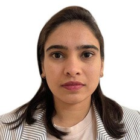

Hi, I'm Bijal.
I build cloud backends
and data platforms.
Cloud Full Stack Engineer & Data Engineer with 10+ years in software, including 5+ years in Germany. I design serverless backends on AWS and large-scale data platforms on Azure Databricks – and turn business requirements into reliable, production-grade systems.

Two kinds of systems. Both in production.
Pick one to see how a typical architecture of mine flows – from the first request or raw event to something the business can use.
10+ years, from PHP backends to cloud data platforms.
Career path from India to Germany – each step closer to cloud and data.
Cloud Full Stack Engineer
- Designed serverless cloud architectures on AWS for scalability and high availability.
- Built microservices with AWS Lambda (Node.js/TypeScript) behind API Gateway (REST) with request validation and dev/staging/prod deployments.
- Secured APIs with OAuth 2.0 / JWT using Lambda authorizers and role-based access.
- Built event-driven pipelines with SQS-triggered Lambdas, batching, retries and dead-letter queues.
+ Show more
- Designed DynamoDB schemas around access patterns: composite keys, GSIs, conditional writes.
- Secure S3 workflows: pre-signed URLs, event-triggered processing, encryption, versioning, lifecycle rules, least-privilege policies.
- Optimised ingestion and storage in S3-based data lakes; AWS Glue ETL jobs in Python from DynamoDB to S3.
- Infrastructure as code with AWS CDK and CloudFormation; monitoring with CloudWatch.
Software Developer & Data Engineer
- Built scalable ETL pipelines with Azure Databricks and PySpark for analytics and reporting.
- Designed Delta Lake architecture on Azure Data Lake, improving reliability, consistency and query performance.
- Implemented real-time and batch ingestion with Azure Event Hub and Data Factory, orchestrated via Databricks Workflows.
- Led data modeling and schema design; tuned complex SQL to cut query execution time.
+ Show more
- Built CI/CD pipelines (GitLab, YAML) for automated, version-controlled data platform deployments.
- Developed scalable Python and PySpark applications for large-scale data processing.
- Turned business requirements into data solutions with cross-functional teams; contributed backend REST APIs (PHP, MySQL/MariaDB).
Full Stack Developer (PHP)
- Developed backend systems and REST APIs in PHP and MySQL for web and mobile applications.
- Designed and optimized database-driven applications; supported the full SDLC.
Full Stack Developer (PHP)
- Built and maintained client web applications and backend services in PHP and MySQL.
Software Developer
- Developed backend systems and APIs; optimized queries and application logic for performance.
The toolbox.
Data engineering, serverless and event-driven architecture, batch & streaming, CI/CD & DataOps.
☁️AWS
🔷Azure & Big Data
⌨️Programming
🗄️Databases
🔧DevOps & Tools
🧩Other
Trained in Germany. Working in English & German.
Master of Data Science (Computer Science)
Rhine-Waal University of Applied Sciences, Germany2019 – 2021B.E. Information Technology
Gujarat Technological University, India2009 – 2013Python Data Science Toolbox
DataCamp · Certification📍 Mülheim an der Ruhr · Niederlassungserlaubnis (permanent residence) · Notice period: 3 months
Building something on AWS or Azure?
I'm open to Cloud Engineer, Data Engineer and Full Stack roles in NRW or remote in Germany. Happy to hear from you.